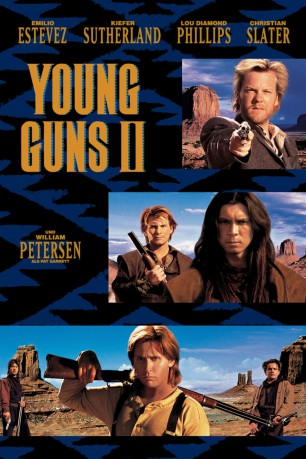
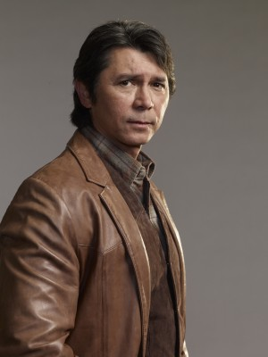
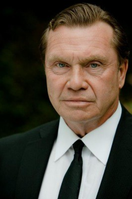

#10386 Young Guns II
Alternativ: Blaze of Glory - Flammender Ruhm
Auszeichnungen: für 1 Oscars nominiert 1 GoldenGlobes gewonnen
 
 IMDB-Wertung: 6.5 / 10
IMDB-Wertung: 6.5 / 10  Tomatometer: 35
Tomatometer: 35  Metascore: 47
Metascore: 47 
Die Schlachten in Lincoln County sind vorüber, doch Sheriff Pat Garrett ist immer noch hinter Billy und seinen Jungs her. Daher wollen sie sich dem Arm des Gesetzes entziehen und sich nach Mexico absetzen. Als sie in einem kleinen Ort eingekesselt sind, sieht es auch gar nicht gut um die Jungs aus, doch sie schaffen es, Garrett und seinen Männern zu entkommen – zumindest vorläufig.
Jahr: 1990
Dauer: 99 Minuten
FSK: 16
Land: USA Studio: Twentieth Century FoxTonspuren: DD2.0 - ,
Untertitel:
Auflösung: 1080p (1920x816) Größe: 11468 MB
Genre: Action, Western
Regisseur: Geoff Murphy
Drehbuch: John Fusco, John Fusco
Soundtrack: Alan Silvestri
Darsteller:
 Emilio Estevez als William H. Bonney
Emilio Estevez als William H. Bonney Kiefer Sutherland als Doc Scurlock
Kiefer Sutherland als Doc Scurlock-  Lou Diamond Phillips als Chavez y Chavez
 Christian Slater als Arkansas Dave Rudabaugh
Christian Slater als Arkansas Dave Rudabaugh William Petersen als Pat Garrett
William Petersen als Pat Garrett Alan Ruck als Hendry French
Alan Ruck als Hendry French-  R.D. Call als D.A. Rynerson
 James Coburn als John Chisum
James Coburn als John Chisum Balthazar Getty als Tom O'Folliard
Balthazar Getty als Tom O'Folliard Jack Kehoe als Ashmun Upson
Jack Kehoe als Ashmun Upson Robert Knepper als Deputy Carlyle
Robert Knepper als Deputy Carlyle Viggo Mortensen als John W. Poe
Viggo Mortensen als John W. Poe Leon Rippy als Bob Ollinger
Leon Rippy als Bob Ollinger Tracey Walter als Beever Smith
Tracey Walter als Beever Smith Bradley Whitford als Charles Phalen
Bradley Whitford als Charles Phalen Scott Wilson als Governor Lewis Wallace
Scott Wilson als Governor Lewis Wallace- Jenny Wright als Jane Greathouse
 Lee de Broux als Bounty Hunter
Lee de Broux als Bounty Hunter- Sonny Skyhawk als Vaquero #2
 Richard Schiff als Rat Bag
Richard Schiff als Rat Bag Nick Gomez als Fernando
Nick Gomez als Fernando- Rene L. Moreno als 2nd Villager
- Ginger Lynn als Dove
- John Fusco als Branded Man
- Bo Greigh als Pit Inmate
 Robert Harvey als Townsman
Robert Harvey als Townsman- Jon Bon Jovi als Pit Inmate Shot Back into Pit (uncredited)
- Tom Kurlander als J.W. Bell
- John Hammil als Pendleton
- William J. Fisher als Second Aide
- Carlotta Garcia als Deluvina Maxwell
- Joy Bouton als Juanita
- Albert Trujillo als Jesus Silva
- Alina Arenal als Sonia
- John Alderson als Guano Miner
- Sixto Joost als Bounty Hunter
- Rudy Sena als Bounty Hunter
- Adam Taylor als Bounty Hunter
- Redmond Gleeson als Murphy Man
- David Paul Needles als Cutter
- Jerry Gardner als Sheriff Kimbel
- Domingo Ambriz als Vaquero #1
- Stephan Kraus als Pietro
- Mark Bustamante als Ignio
- Airen Balen als Student
- Don Simpson als Pinkerton Man
- Holt Parker als Sumner Priest
- Tony Frank als Judge Bristol
- Frank Fierro Jr. als Villager
- Chief Buddy Redbow als Chief Victorio
Datei: X:\HD-Western-Collections\Young Guns\Young Guns II (1990, FSK16, 1920x816).mkv seit 03.01.2019
Festplatte: HD Eastern+Western
 Alle Filme aus Gruppe 'HD-Western-Collections\Young Guns'
Alle Filme aus Gruppe 'HD-Western-Collections\Young Guns'